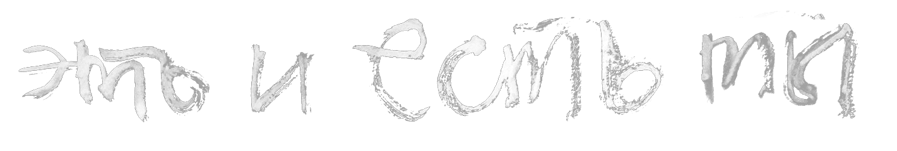
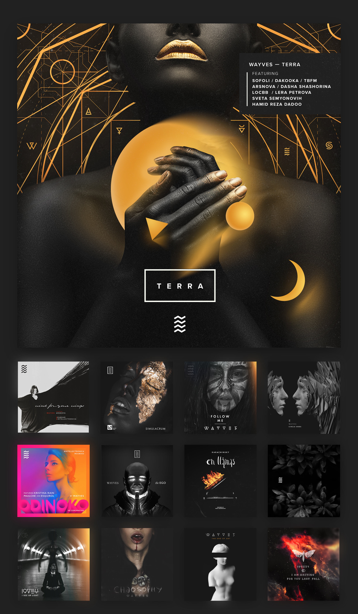

Предыстория
WAYVES — музыкальный электронно-акустический проект с насыщенной и постоянно развивающейся визуальной историей бренда.
С неймингом всё достаточно просто: WAY + WAVES. Путь и волны. Очень доступная жизненная философия.
Когда же с именем все решилось, пришло время разработать знак. К моему удивлению, 4 ломаных линии символизирующие волны, нигде не использовались.
Итак, логотип:
На протяжении последних двух лет знак претерпавал небольшие изменения и обрастал элементами фирменного стиля.

Важнейшая составляющая визуального стиля — обложки релизов, сделанные совместно с талантливыми художниками и фотографами:

В результате активности вокруг музыкального сообщества, осенью 2017 года было принято решение о запуске диджитал-лейбла Unclaimed Records, для которого был разработан простой и зпоминающийся знак и сайт-каталог подписанных на лейбл музыкантов:

Более изящная версия логотипа (2016 год) и кадр из клипа.